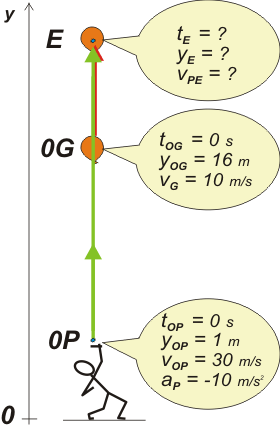

| home | | | más de cinemática | | | otros temas de Física | | | lecciones del maestro Ciruela | | | tonterías | | | @ |
|
|||||||||||||||


 |
Marqué tres puntos notables: 0P es el evento en el que parte la piedra. 0G es el evento en el que el globo se encuentra a 16 m de altura. (Ya puede verse que los eventos 0P y 0G son simultáneos). Y E el evento en el que la piedra alcanza al globo. Después veremos que la piedra se cruza con el globo en dos oportunidades, pero bueno, nosotros no teníamos por qué apiolarnos de eso de antemano, ni tampoco es necesario. Además el enunciado pregunta sólo por el primer encuentro. Y además seguro que la piedra pincha al globo. |
|
Ahora escribimos las ecuaciones horarias que describen el problema... ¿Cuántas son? Tres, porsupu, porque el globo se mueve con MRU (se describe con una ecuación) y la piedra con un MRUV (dos). Con los modelos a mano: |
||
|
Modelos. | |
Para armar las ecuaciones que describen los movimientos de nuestro problema reemplazamos las constantes (to , yo , vo y a) por las constantes iniciales de cada uno: para la piedra las del punto 0P, para el globo las del punto 0G. |
||
| globo | y = 16 m + 10 m/s . t | Estas son las ecuaciones que describen TODO el fenómeno del movimiento contado en el enunciado. |
||
| piedra | y = 1 m + 30 m/s . t – 5 m/s² . t² | |||
| v = 30 m/s – 10 m/s² . t | ||||
Y les pedimos que hablen del punto E. Ellas dicen... |
||||
| yE = 16 m + 10 m/s . tE | [1] | Estas, en cambio, son las ecuaciones especializadas para los instantes que a vos te interesan. | ||
| yE = 1 m + 30 m/s . tE – 5 m/s² . tE ² | [2] | |||
| vpE = 30 m/s – 10 m/s² . tE | [3] | |||
¡Oh! ¡Albricias! Hemos encontrado (y no de casualidad, es algo casi inevitable) un sistema de tantas ecuaciones como incógnitas (3x3) donde las incógnitas son aquellas que pregunta el enunciado del problema (miralas bien). Pues... la física del problema ha concluido, el resto es fundamentalmente álgebra, es menos dramático. (Este material me parece un poco reiterativo, todos los problemas me parecen iguales... ¿Por qué no usás algo más divertido?) Aquí una de las 254.328 resoluciones posibles: igualo los segundos miembros de [1] y [2] |
||||
| 16 m + 10 m/s . tE = 1 m + 30 m/s . tE – 5 m/s² . tE² | ||||
| esto es una única ecuación con una única incógnita, tE . Lo siento, pero tE está al cuadrado, vas a tener que operar para igualarla a 0 y usar la fórmula salvadora. | ||||
| 0 = 15 m – 20 m/s . tE + 5 m/s² . tE² | ||||
| Y obtenemos dos valores de te, uno usando el "+" y otro usando el "–". ¿Los dos sirven? ¡Sí!, la piedra alcanza al globo, y si no lo pincha lo sobrepasa. Pero después se va frenando y regresa... y se vuelven a encontrar: | ||||
| tE1 = 1 s | tE2 = 3 s | |||
| Con estos valores voy a las ecuaciones [1] y [2] (en ambas debo obtener los mismos resultados) y así obtengo las alturas en las que piedra y globo se encuentran | ||||
| yE1 = 26 m | yE2 = 46 m | |||
| También los llevo a la ecuación [3] y obtengo la velocidad de la piedra en los cruces | ||||
| vPE1 = 20 m/s | vPE2 = 0 m/s | |||
Este último resultado es pura casualidad. Significa que el globo alcanza a la piedra justo cuando ésta está por comenzar a bajar. Se hallaba en su altura máxima. |
||||
Los gráficos tal vez te sirvan para terminar de cerrar las ideas. Siempre hay que hacerlos en tándem. Acá tenés la piedra en verde y el globo en rojo. En el gráfico de velocidad en función del tiempo hay dos puntos notables, ¿te animás a encontrarlos, a decir qué significan y a decir si coinciden o no con la información que da el gráfico de alturas? También tenés que encontrar en el gráfico de velocidad (sólo para practicar) dos áreas iguales. Si te acordás cuál es el significado de las áreas de los gráficos v-t vas a ir al gráfico de y-t para saber qué buscar... y lo vas a encontrar. |
|||
|
|||
| DESAFIO: Reescribir el enunciado del problema pero eligiendo un valor para la velocidad de la piedra tal que se encuentre con el globo una sola vez. (No vale pinchar el globo). |  |
||
|
|||